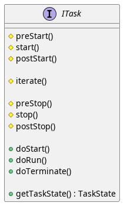

Example: Tasks
Demonstrates the use of the task subsystem for the creation of asynchronously executed jobs
OSAL Task Framework
The controlengine offers the Task framework to handle the execution of tasks. A task is a repetitive job that can be performed in parallel to other tasks. For non-threaded platforms, these are implemented akin to a task loop, while threaded platforms can use threading for preemptive task switching.
Task Interface
A task is always described by its interface ITask:

These functions are meant to be “populated” as follows:
-
class ITask
Interface class describing a task that can be started, run and stopped. Implementations may include both threaded task models and iterated task loops.
Subclassed by semodia::controlengine::native::osal::tasking::BasicTaskLoopTask, semodia::controlengine::native::osal::tasking::ThreadedTaskDecorator, semodia::controlengine::native::osal::tasking::ThreadedTaskDecorator
Public Functions
-
virtual void doStart() = 0
Handles initializing a task using (pre/post)-start(). May set run=true for doRun.
-
virtual void doRun() = 0
If the task is running, this will handle how/when iterate() is invoked. Note that this function should not change bool run on its own (see doStart and doTerminate).
-
virtual void doTerminate() = 0
Waits for the task to stop running and calls (pre/post)-stop(). Sets run=false and waits for run-loop or doRun to exit.
-
inline virtual TaskState getTaskState()
- Returns:
true if doRun and not amRunning; default implementation is not thread-safe.
Protected Functions
-
inline virtual void setTaskState(const TaskState newState)
Update the internal state of this task; default implementation is not thread-safe.
- Parameters:
newState –
-
inline virtual void postStart()
Describes how a task is initialized before start() is called. Called by doStart().
-
virtual void iterate() = 0
Execute the business logic exactly once. Can be called either directly by doRun() or by thread if the OS supports it. iterate() must exit/return if run==false.
-
inline virtual void preStop()
Actions performed prior to stop(). Called by doTerminate() before run=false is set.
-
inline virtual void stop()
Actions performed to stop the task. Called by doTerminate().
-
inline virtual void postStop()
Actions performed once after the task is stopped. Called by doTerminate().
-
virtual void doStart() = 0
A simple implementation is the BasicTaskLoopTask, designed to be run as a task loop by repeatedly calling doRun().
Task types
Based on the above interface, CENA provides some very rudimentary task types.
`BasicTaskLoopTasks` implement placeholders everything except iterate(). This task type allows quickly creating new task classes for task loops.
`FrequencyLimitedTaskLoopTask` works exactly like BasicTaskLoopTasks, but adds a time gate condition to iterate(). doStart() can be called repeatedly from a main loop or thread, but the task will internally invoke iterate() every x milliseconds. This is perfect for reducing the tick rates of state machines or lowering file I/O operation loads in drivers.
Example usage
The following code demonstrates the usage of the tasks framework on a simple example. We create 2 BasicTaskLoop instances which increase an internal counter and write it to the terminal on each invocation. If threading is supported, we use the ThreadedTaskDecorator to execute the tasks in parallel.
First, we include the required system headers for signal handling and waiting.
extern "C"
{
#include <unistd.h>
}
#include <csignal>
#include <iostream>
#include <memory>
Now we can include required headers for tasks running without any threading.
#include "tasking/BasicTaskLoopTask.hpp"
#include "locking/ILockable.hpp"
#include "locking/Lock.hpp"
And finally the header files for threaded task execution, if threaded usage is enabled.
Feel free to comment following define statement to disable the usage of threading in this example.
#define USE_THREADS
Threads can decorate CENA Tasks by acting as a proxy pattern. The ThreadedTaskDecorator accepts a single task as “content” and then proxies the public interface functions. When doStart() is called and the thread will then continuously invoke doStart().
Warning
Processor load when wrapping tasks
The cont. call to doStart() by the thread will create high processor loads in the current implementation.
#ifdef USE_THREADS
#include "tasking/ThreadedTaskDecorator.hpp"
#endif
using namespace semodia::controlengine::native;
We introduce a global variable which listens on user provided signals (SIGINT / SIGABORT) to end the main loop.
bool mainLoopDoRun = true;
void signalHandler([[maybe_unused]] int signal)
{
mainLoopDoRun = false;
}
The ExampleTask class encapsulates the desired behaviour for our repetitively executed job. We inherit from the according base class (BasicTaskLoopTask) and add our own custom behaviour. In this example we write an incrementing number to the command line on each execution of the task.
class ExampleTaskA : public osal::tasking::BasicTaskLoopTask
{
private:
unsigned counter;
protected:
We don’t have to override start() and stop(), but in this case we want a task to always start at 1 when it is (re-)start it.
void start() override
{
counter = 1;
}
The iterate() function is invoked upon each task execution and therefore should contain the business logic. This function must exit and may not block execution.
void iterate() override
{
std::cout << "A: Task Invocation: " << counter++ << std::endl;
This output will occur every time doStart() is called.
This will spam our terminal. To mitigate this problem, we will do something very bad: sleep/block in iterate. We will see how to ‘cleanly’ mitigate situations like this with ExampleTaskB.
usleep(1000 * 500);
}
public:
ExampleTaskA(std::unique_ptr<osal::locking::ILockable> lock)
: osal::tasking::BasicTaskLoopTask(std::move(lock))
, counter(1)
{
return;
};
};
A second Task is introduced to demonstrate the behaviour of multiple concurrent tasks inside an application. This task behaves like the example task above, but instead of numbers, this task increments letters beginning from ‘a’ up to ‘z’ and repeats.
To improve on our ExampleTaskA, we will use the FrequencyLimitedTaskLoopTask, allowing us to omit the rather unwieldy call to usleep() in iterate(). This makes our task non-blocking in both threaded and non-threaded applications, while yielding the same result as ExampleTaskA.
#include "tasking/FrequencyLimitedTaskLoopTask.hpp"
#include "timing/BasicTimer.hpp"
class ExampleTaskB : public osal::tasking::FrequencyLimitedTaskLoopTask
{
private:
char counter;
protected:
void iterate() override
{
std::cout << "B: Task Invocation: " << counter << std::endl;
if (++counter > 'z')
{
counter = 'a';
}
}
public:
ExampleTaskB(std::unique_ptr<osal::locking::ILockable> lock)
: osal::tasking::FrequencyLimitedTaskLoopTask(std::move(lock), std::make_unique<osal::timing::BasicTimer>())
, counter('a')
{
this->setTickCountBetweenIterations(this->getTimerTicksPerSecond()); // >1s between calls to iterate()
return;
};
};
Finally, everything is merged in the main function.
int main()
{
Register the signal handlers
std::signal(SIGINT, signalHandler);
std::signal(SIGTERM, signalHandler);
Instantiate the tasks and their internal locks
auto exampleTaskA = std::make_unique<ExampleTaskA>(std::make_unique<osal::locking::Lock>());
auto exampleTaskB = std::make_unique<ExampleTaskB>(std::make_unique<osal::locking::Lock>());
If threading is enabled, we can now apply the decorator for the BasicTaskLoopTask objects that makes use of OS supplied threads for the execution of the tasks. All calls to the BasicTaskLoopTask objects are from now on directed at the ThreadedTaskDecorator.
#ifdef USE_THREADS
auto exampleTaskAThread = osal::tasking::ThreadedTaskDecorator(*exampleTaskA);
auto exampleTaskBThread = osal::tasking::ThreadedTaskDecorator(*exampleTaskB);
#endif
The tasks have to be started.
#ifdef USE_THREADS
exampleTaskAThread.doStart();
exampleTaskBThread.doStart();
When using threaded task execution, doRun() has to be called exactly once to start the task.
exampleTaskAThread.doRun();
exampleTaskBThread.doRun();
#else
exampleTaskA->doStart();
exampleTaskB->doStart();
#endif
while (mainLoopDoRun)
{
#ifdef USE_THREADS
There is nothing to do here, execution is taken care of by the threads.
However, in this example we later introduce an additional sleep to mitigate busy waiting of the main thread and compiler optimizations, which might remove the main loop in the main thread and thus terminate the complete program.
sleep(1);
#else
When we don’t use threading, each task has to be called periodically.
exampleTaskA->doRun();
exampleTaskB->doRun();
#endif
}
Finally, the tasks are terminated.
#ifdef USE_THREADS
exampleTaskAThread.doTerminate();
exampleTaskBThread.doTerminate();
#else
exampleTaskA->doTerminate();
exampleTaskB->doTerminate();
#endif
return 0;
}
Source Code
Here’s the complete source code from this example:
1extern "C"
2{
3 #include <unistd.h>
4}
5#include <csignal>
6#include <iostream>
7#include <memory>
8
9#include "tasking/BasicTaskLoopTask.hpp"
10#include "locking/ILockable.hpp"
11#include "locking/Lock.hpp"
12
13#define USE_THREADS
14
15#ifdef USE_THREADS
16#include "tasking/ThreadedTaskDecorator.hpp"
17#endif
18
19using namespace semodia::controlengine::native;
20
21bool mainLoopDoRun = true;
22
23void signalHandler([[maybe_unused]] int signal)
24{
25 mainLoopDoRun = false;
26}
27
28class ExampleTaskA : public osal::tasking::BasicTaskLoopTask
29{
30private:
31 unsigned counter;
32
33protected:
34 void start() override
35 {
36 counter = 1;
37 }
38
39 void iterate() override
40 {
41 std::cout << "A: Task Invocation: " << counter++ << std::endl;
42 usleep(1000 * 500);
43 }
44
45public:
46 ExampleTaskA(std::unique_ptr<osal::locking::ILockable> lock)
47 : osal::tasking::BasicTaskLoopTask(std::move(lock))
48 , counter(1)
49 {
50 return;
51 };
52};
53
54#include "tasking/FrequencyLimitedTaskLoopTask.hpp"
55#include "timing/BasicTimer.hpp"
56class ExampleTaskB : public osal::tasking::FrequencyLimitedTaskLoopTask
57{
58private:
59 char counter;
60
61protected:
62 void iterate() override
63 {
64 std::cout << "B: Task Invocation: " << counter << std::endl;
65 if (++counter > 'z')
66 {
67 counter = 'a';
68 }
69 }
70
71public:
72 ExampleTaskB(std::unique_ptr<osal::locking::ILockable> lock)
73 : osal::tasking::FrequencyLimitedTaskLoopTask(std::move(lock), std::make_unique<osal::timing::BasicTimer>())
74 , counter('a')
75 {
76 this->setTickCountBetweenIterations(this->getTimerTicksPerSecond()); // >1s between calls to iterate()
77 return;
78 };
79};
80
81int main()
82{
83 std::signal(SIGINT, signalHandler);
84 std::signal(SIGTERM, signalHandler);
85
86 auto exampleTaskA = std::make_unique<ExampleTaskA>(std::make_unique<osal::locking::Lock>());
87 auto exampleTaskB = std::make_unique<ExampleTaskB>(std::make_unique<osal::locking::Lock>());
88
89#ifdef USE_THREADS
90 auto exampleTaskAThread = osal::tasking::ThreadedTaskDecorator(*exampleTaskA);
91 auto exampleTaskBThread = osal::tasking::ThreadedTaskDecorator(*exampleTaskB);
92#endif
93
94#ifdef USE_THREADS
95 exampleTaskAThread.doStart();
96 exampleTaskBThread.doStart();
97
98 exampleTaskAThread.doRun();
99 exampleTaskBThread.doRun();
100#else
101 exampleTaskA->doStart();
102 exampleTaskB->doStart();
103#endif
104
105 while (mainLoopDoRun)
106 {
107#ifdef USE_THREADS
108 sleep(1);
109#else
110 exampleTaskA->doRun();
111 exampleTaskB->doRun();
112#endif
113 }
114
115#ifdef USE_THREADS
116 exampleTaskAThread.doTerminate();
117 exampleTaskBThread.doTerminate();
118#else
119 exampleTaskA->doTerminate();
120 exampleTaskB->doTerminate();
121#endif
122
123 return 0;
124}